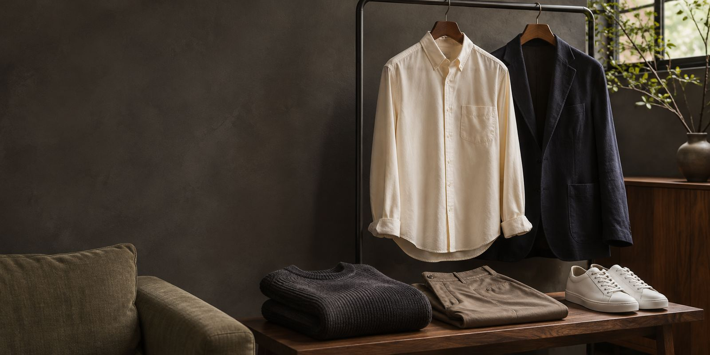
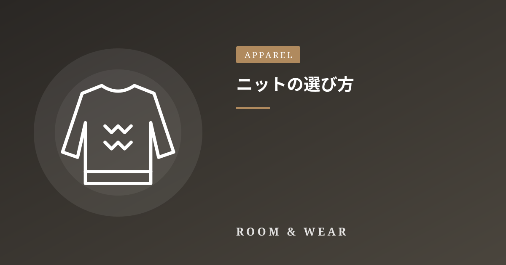
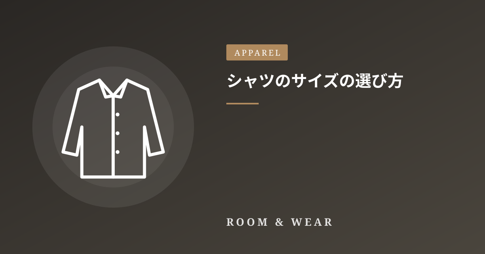
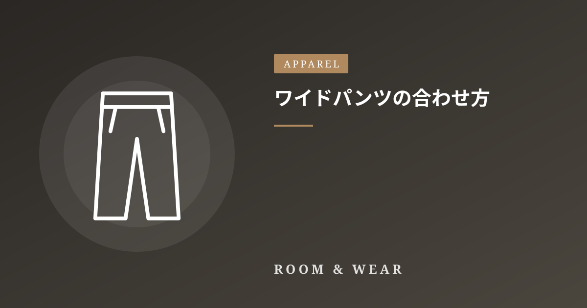
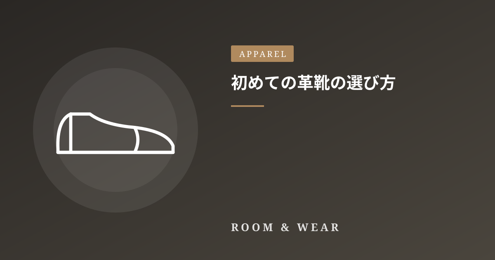
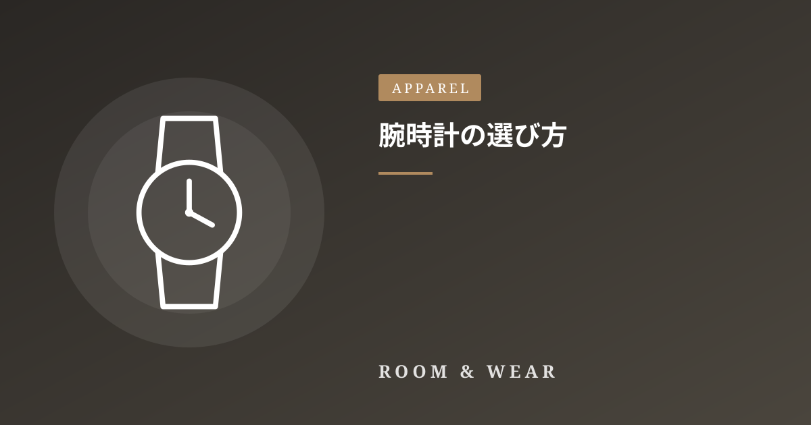
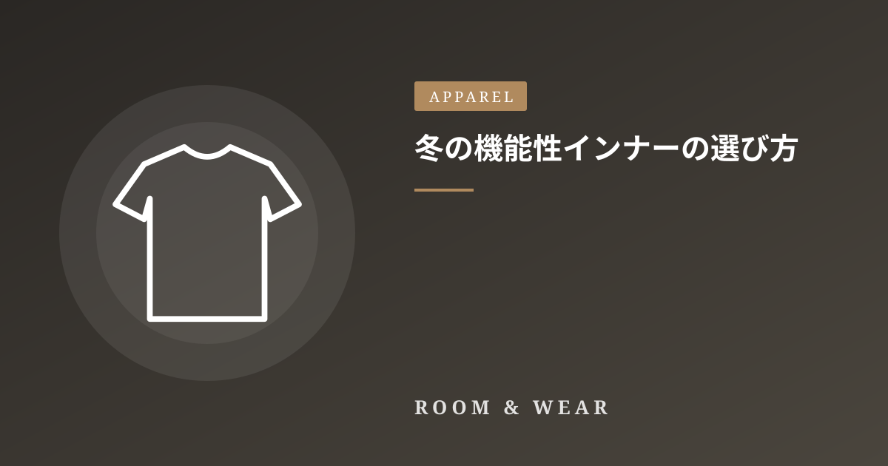
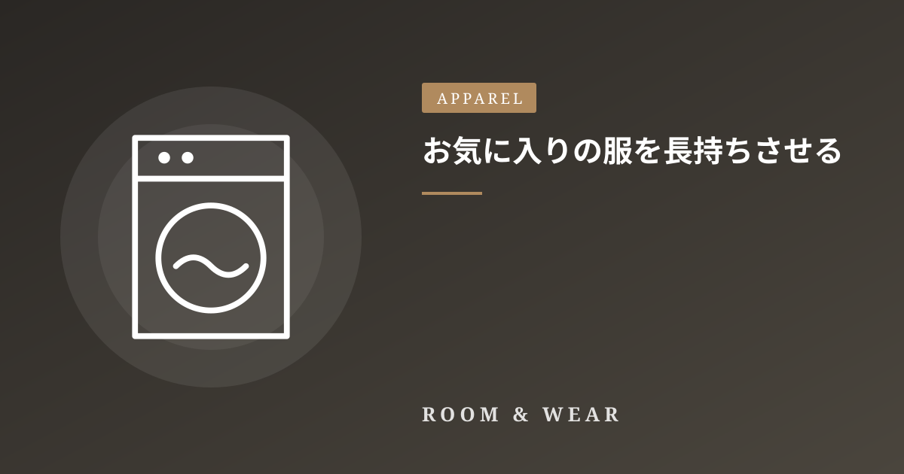
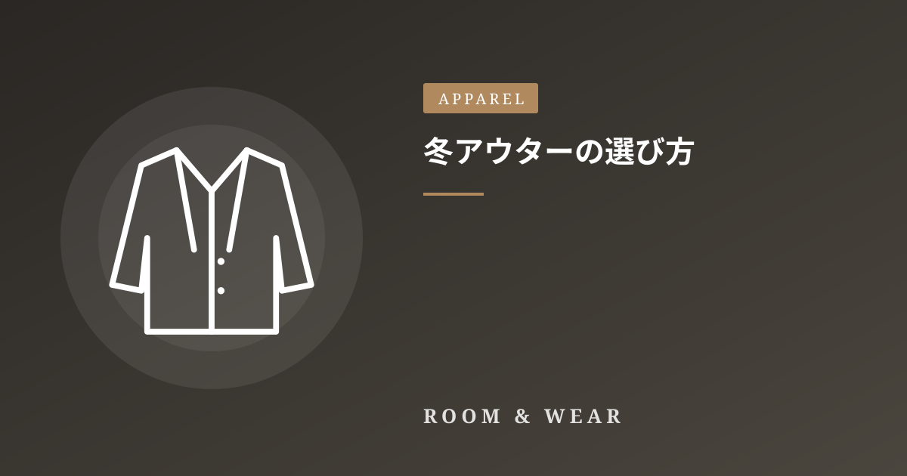

服を選ぶ
毎日着る服の選び方、サイズの合わせ方、長く着るための手入れを紹介します。
15本の記事

アパレルニットの選び方。ウール・カシミヤ・コットン・アクリルの違い
冬の定番ニットは素材で暖かさも見た目も変わります。代表的な4つの素材の特徴と、首元の形の選び方をまとめました。
 アパレル
アパレルチノパンの選び方。色・シルエット・丈で印象をコントロールする
デニムと並ぶ定番パンツ、チノパン。色とシルエットの選び方、きれいに見える丈の合わせ方を紹介します。
 アパレル
アパレル大人が着るパーカーの選び方。子どもっぽく見せないポイント
ラクで便利なパーカーも、選び方次第で大人っぽく着られます。生地・色・サイズ感・合わせ方のコツをまとめました。

アパレルシャツのサイズの選び方。肩・身幅・袖丈・着丈の見るべきポイント
シャツはサイズ感で印象が大きく変わるアイテム。通販でも失敗しないための、測る場所とチェックポイントを解説します。

アパレルワイドパンツの合わせ方。だらしなく見せないバランスのコツ
トレンドのワイドパンツは、トップスと靴の選び方がポイント。全体のバランスを整えるコツを紹介します。

アパレル初めての革靴の選び方。デザイン・色・素材の基本
スーツにも休日にも使える1足目の革靴の選び方。代表的なデザインの違いと、サイズ選びの注意点をまとめました。
 アパレル
アパレル通勤バッグの選び方。リュック・トート・ショルダーを比較
毎日使う通勤バッグは、荷物の量と服装に合わせて選ぶのがポイント。タイプ別の特徴と選び方を紹介します。

アパレル腕時計の選び方。ムーブメント・ケースサイズ・ベルトの基本
腕時計は小さくても印象を左右するアイテム。初めての1本を選ぶときに知っておきたい基本をまとめました。

アパレル冬の機能性インナーの選び方。厚さ・首元・袖丈で選ぶ
冬の寒さ対策に欠かせない機能性インナー。シーンに合った厚さと、外から見えないための首元・袖丈の選び方を紹介します。
 アパレル
アパレルキャップ・帽子の選び方。似合う形とサイズの合わせ方
コーデのアクセントになるキャップやニット帽。形の種類と、自分に合うサイズの選び方をまとめました。

アパレルお気に入りの服を長持ちさせる。洗濯と収納の基本ルール
服がすぐヨレる・縮む原因の多くは洗い方と収納にあります。今日からできる洗濯と収納のコツを紹介します。
 アパレル
アパレルスニーカーは1足目に何を選ぶ？色・形・素材の基本
どんな服にも合わせやすいスニーカーの条件とは。色・形・素材の観点から、1足目に選びたいスニーカーのポイントをまとめました。
 アパレル
アパレル白Tシャツの選び方。生地の厚さとシルエットで印象はここまで変わる
同じ白Tでも、生地の厚さ・首回り・シルエットで見え方はまったく違います。自分に合う1枚を見つけるためのチェックポイント。

アパレル冬アウターの選び方。ダウン・ウール・中綿の違いと向いている人
冬の主役になるアウター。ダウン・ウールコート・中綿ジャケットそれぞれの特徴と、生活スタイル別の選び方を解説します。
 アパレル
アパレル服選びで失敗しない。20代・30代メンズがまず揃えたい「基本の5着」
何を買えばいいか迷ったら、まずはこの5着。着回しやすく、どんな場面でも浮かない定番アイテムの選び方をまとめました。